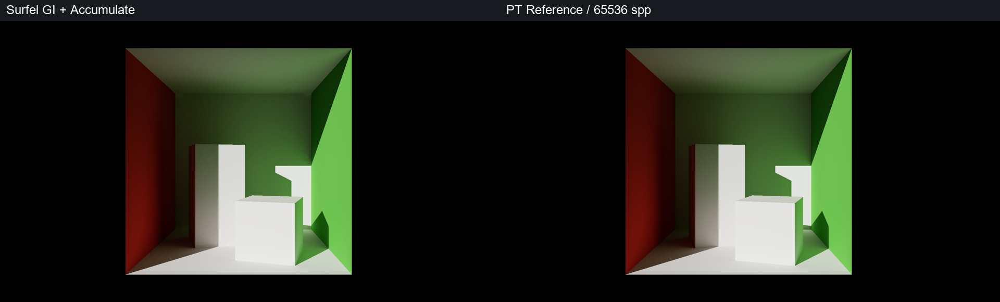
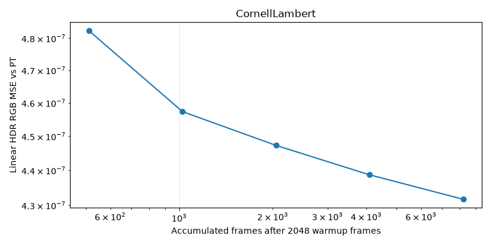
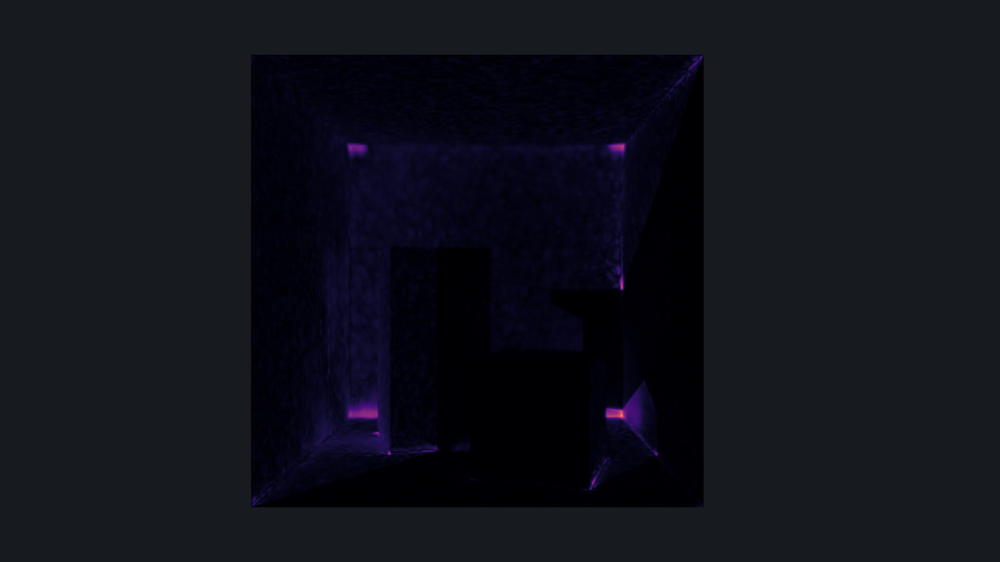
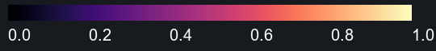
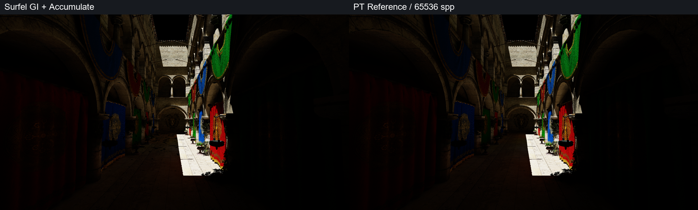
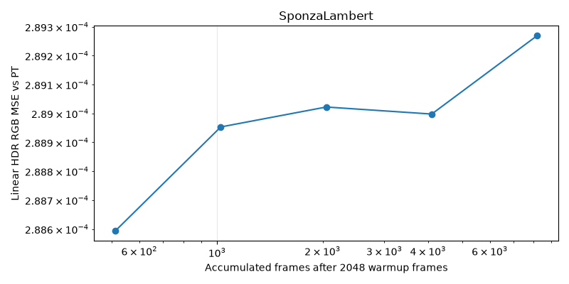
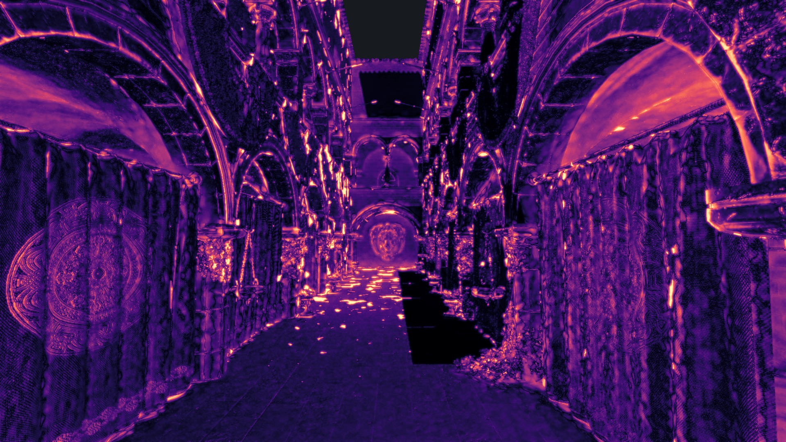

基于 W298/SurfelGI 的移植与修正版本，不代表 EA 官方 GIBS。原项目 MIT 许可保留在插件目录。
Pass 组织：GBufferRT → Surfel（网格重建、路径追踪、缓存积分、生成、屏幕插值）→ Lighting（直接光+材质×缓存间接光）→ Accumulate → Display。没有额外屏幕 final gather、NRD 或 ReSTIR。缓存预热 2048 帧，再清空 Accumulate 并累积 8192 帧。GPU 耗时取稳定期 256 帧平均，包含持续缓存更新和全部显示流程。
CornellLambert 使用当前场景配置。SponzaLambert 使用默认方向光 RGB 50、点光关闭，相机 (-9,1.6,0) 看向 (8,2.5,0)；复用相同场景的 65536 spp PT，已逐像素校验位置/法线与现有实验一致。指标在可见表面 mask 上评估线性 HDR，HDR-FLIP 使用统一参考曝光范围、ACES、PPD 67；显示曝光仅由各场景 PT 决定。
修正：均匀半球 PDF 与 E/π 归一化、多灯索引、字节地址、未初始化结果、环境方向、alpha test、场景材质污染、固定网格清理、可见 surfel 寿命、生成组同步、积分历史读写、错误的 roulette/cache 组合。同时修正深度矩零初始化造成的错误遮挡、深度方向整数除法、空闲计数下溢，并为可见表面保留半池分配容量。原有不正确的 ray guiding 禁用。生成采用每 tile 每帧随机一个候选，无线程组同步；表面缓存插值保留原方法。性能参数改为有界配置，并自动估算网格范围。
测试硬件：NVIDIA GeForce RTX 5070, 621.01；1920×1080，D3D12。
单位环境验证（Lambert 反照率 0.5）：{'expected': 0.5, 'mean': 0.49962496757507324, 'median': 0.49965962767601013, 'passed': True}
MSE：4.3170983e-07；HDR-FLIP：0.03296；完整渲染图 GPU：2.536 ms。
4096→8192 帧累积变化（相对 RGB RMS）：pt 0.139%, surfel 0.090%。变化衡量稳定性，不等于相对 PT 的正确性。


Magma [0,1]，黑紫误差低、橙黄误差高；背景为 mask 外，不是相似度百分比。


MSE：0.00028926944；HDR-FLIP：0.21384；完整渲染图 GPU：13.761 ms。
4096→8192 帧累积变化（相对 RGB RMS）：pt 0.092%, surfel 0.046%。变化衡量稳定性，不等于相对 PT 的正确性。


Magma [0,1]，黑紫误差低、橙黄误差高；背景为 mask 外，不是相似度百分比。

Cornell 的整体能量与颜色接近 PT，仍有局部插值边界误差。Sponza 的间接光区域、拱顶、布帘细节和柱脚附近差异更明显；这是当前实验版本的局限，不能据此认为所有 Surfel GI 都有相同表现。
Sponza 主要耗时：屏幕 surfel 查询 6.980 ms，缓存射线追踪 4.226 ms，表面生成 1.098 ms。当前逐像素遍历格子候选列表是主要优化目标，尚未实现分层或 tile 级候选筛选。
配置：容量 32768，64³ 相机中心网格，targetArea 2048，可见 surfel 每帧 4–16 条起始路径（总容量 524288）；3 跳后尝试接入缓存，最多 6 跳；后台 surfel 跳数加倍。默认关闭邻居 irradiance sharing 和 ray guiding。起始路径数不等于 BVH 总射线数。
限制：当前是漫反射 GI 实验路径；缓存插值、深度近似、有限覆盖和多尺度估计器仍会引入偏差。Accumulate 稳定不代表与 PT 完全一致。未实现镜面/透射 GI、无限范围分级缓存和 GIBS 的完整回退机制。